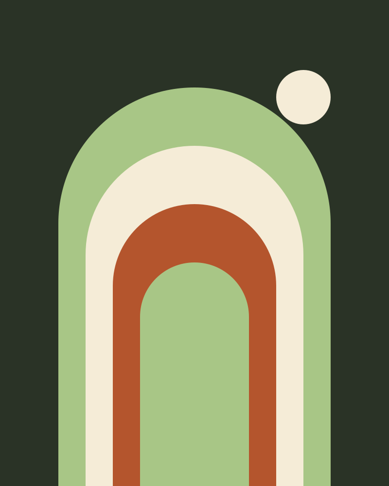

Pattern group
Heroes
The first screen of a portfolio. On a real page the hero title is the page h1; in this demo it is an h2 so the page keeps one h1.
Statement
.oo-hero
Available for projects from February
Identity, film and the quiet details in between.
I’m Rowan, an independent designer and filmmaker. I help small studios, publishers and festivals look as considered as the work they make.

12 yrs of independent practice
Slider
.oo-hero-slider.oo-carousel [data-oo-carousel] [data-oo-autoplay]